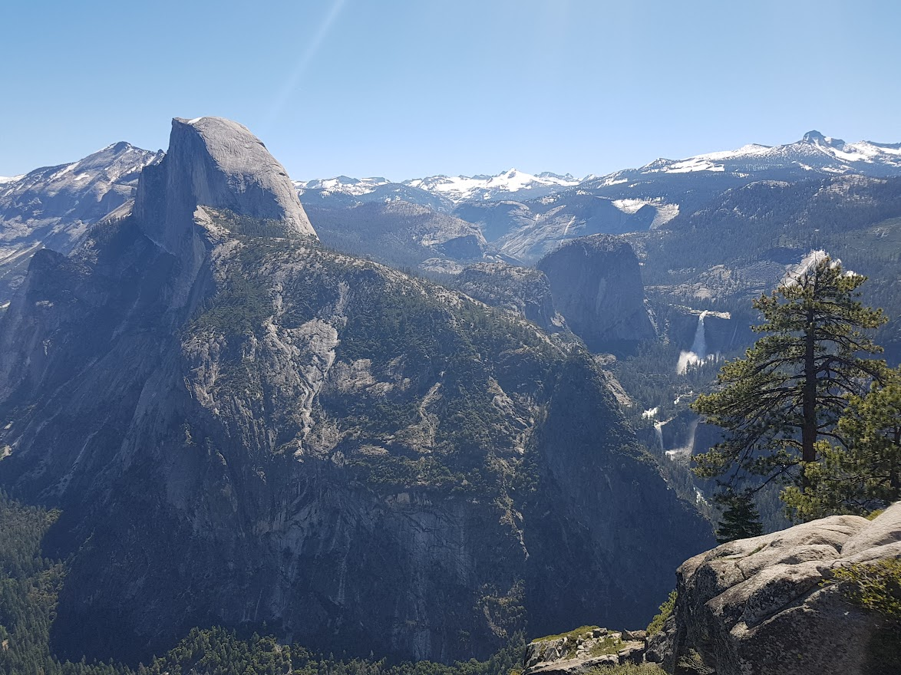

Geboren en getogen in Geel en dit al voor 36 jaar. Hoewel er veel voordelen zijn aan de grote stad: architectuur, cultuur, lekker eten. Heb ik me er nooit volledig op mijn gemak gevoelt. Iets te veel mensen en nergens echt rust te vinden. Leuk om te bezoeken maar geef mij maar de rust van de “boerenbuiten”.
Momenteel werk ik als postbode. Hoewel dit een goede start job is om de huur mee te betalen. Wist ik al snel dat ik dit niet voor de rest van mijn leven wou doen. Toffe collega’s hebben me blijven plakken voor langer dan ik ooit gedacht had. Tijdens de eerste lockdowns is het gevoel “ik zit niet op de juiste plaats” terug naar boven gekomen. Daarom dat ik aan de graduaatopleiding programmeren ben begonnen.
Geef me een deadline en ik presteer op mijn best. Ik hou niet van klokkijken. Zowel in mijn persoonlijk leven als op de werkvloer. De eindmeet zien motiveert me. Het enige waar ik op moet letten is dat ik een marathon niet in een sprint laat ontaarden. Hiermee bedoel ik dat als de deadline ver weg is ik het werk durf uit te stellen. Zeker in mijn adolescente jaren vormde dit een probleem. Als volwassenen is dit minder een issue, maar wel iets waar ik aandachtig voor moet blijven.
Ik hou van teamwerk. Groepsdruk zorgt ervoor dat ik het beste van mezelf wil geven. Ik wil dat mijn teamleden tevreden zijn over mijn werk. Ik stel dus hoge eisen in dit soort omgeving voor mezelf maar ook voor de anderen. Als ik de enige ben die hard werk zal ik snel een transfer willen naar een team dat hieraan evenveel belang hecht als ik.
Voor ervaring op de werkvloer, diplomas en andere competenties kan u mijn curriculum vitae raadplegen.
Ik was 7 toen ik, met eerste communie geld, een Sega megadrive kocht. Nadat mijn vader de console aan de tv had gehangen. Ik de power knop opdraaide en er luide “Sega!” uit onze beeldbuis kwam wist ik dat ik verkocht was. De hardware veranderde, Playstation, Xbox, PC. De liefde bleef. Helaas is mijn onbezorgde jeugd voorbij en heb ik niet zo veel tijd meer om hierin te steken. Echter heb ik nog steeds een console in huis. Dus als er eens een uurtje zonder zorgen “gekast” kan worden zal ik dit zeker niet laten liggen.
Ik deed in mijn kindertijd meer dan gamen alleen. Tot mijn 12 jaar heb ik verschillende hobby’s geprobeerd. Chiro, voetbal, squash. Ik heb ze allemaal gedaan maar geen enkele kon me echt vastgrijpen.
In de middelbare school kwam ik in een nieuwe klas terecht waar 2 van mijn medeleerlingen basket speelde. Ik was de grootste van de klas en natuurlijk volgde de vraag of ik niet mee wou gaan trainen. “Waarom ook niet” dacht ik. Eén training en veel gemiste shots later en ik wist meteen dat ik mijn sport gevonden had. Tot op de dag van vandaag speel ik nog steeds in ploegverband. Daarnaast volg ik de Amerikaanse basketbalcompetitie “de NBA” op de voet, en is de enige reden om naar de Olympische spelen te kijken: de basketbalcompetitie. 5x5 of 3x3, maakt me niet uit als er maar gedunkt wordt.
De soundtrack op de achtergrond van mijn leven is altijd tv en film geweest. Nu nog steeds kan ik zeer genieten van een goede film. Dit kunnen Oscar waardige of Indy films zijn maar net zo goed een hersenloze actiefilm of blockbuster. Als het verhaal maar goed zit.
Als tiener is er ook een liefde voor muziek bijgekomen. Begonnen met hiphop, later kwam er rock en techno bij. In principe kan ik naar alles luisteren als er maar een goede melodie of sick beat te vinden is. Festivals of concerten horen dan ook bij mijn favoriete uitstappen.

Later in het leven is reizen een extra passie geworden. En dan bedoel ik niet een weekendje city trippen naar Parijs of Amsterdam. Dit kan natuurlijk ook leuk zijn, maar ik zoek liever de natuur op. Een vermoeiende tocht de bergen in om uiteindelijk op een uitkijkpunt te komen en uren te staren naar een prachtige vallei. Mijn idee van hemel op aarde.
